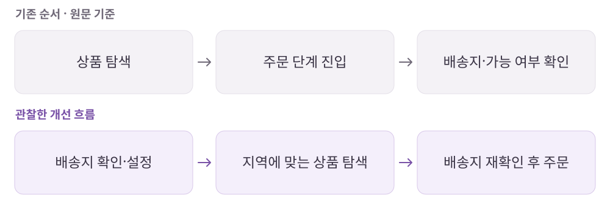
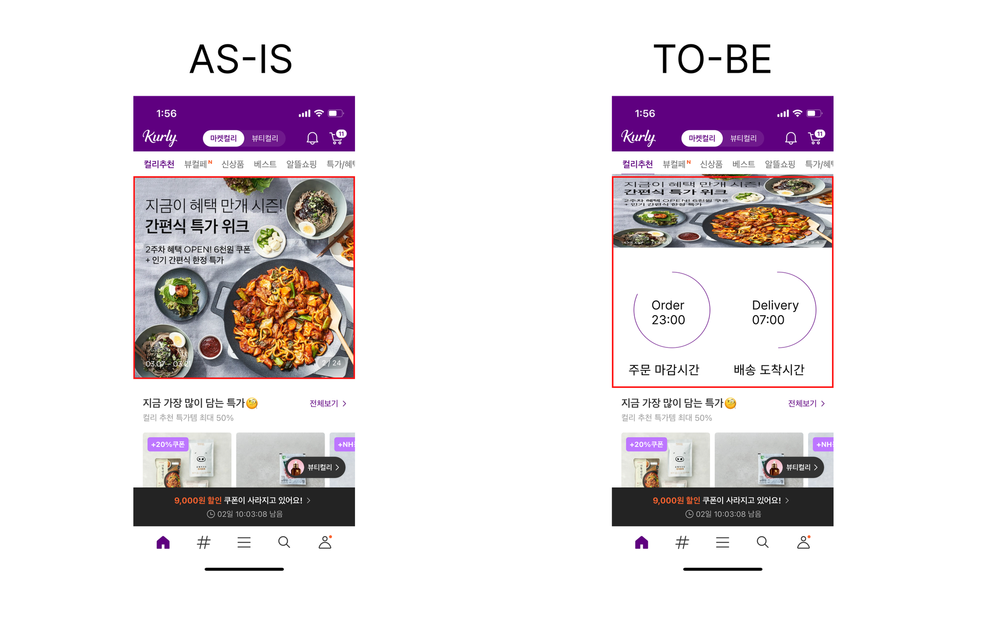
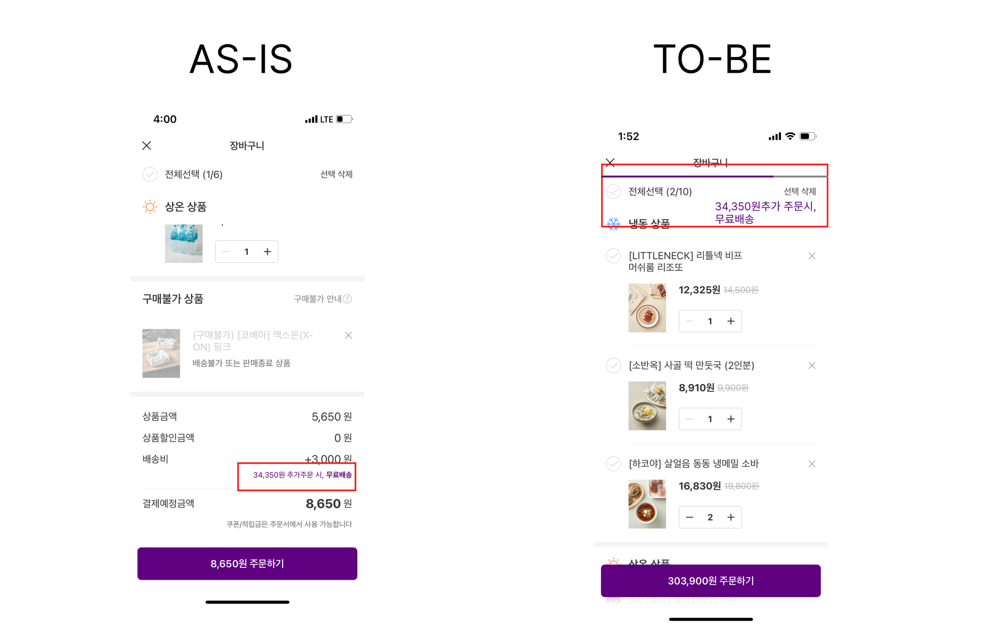

마켓컬리
배송 가능 여부와 무료배송 조건은 구매 과정의 어디에서 안내해야 할까?
신선한 식재료와 식품을 온라인으로 주문하고 배송받는 식품 커머스 플랫폼.
학습 목적배송지 설정·도착 시간·무료배송 조건을 안내하는 순서를 비교하고, 재탐색을 줄이는 개선안을 정리했습니다. 레시피와 구매의 연결, 쿠폰 운영 항목, 신선도를 유지하는 배송 체계도 살폈습니다.
개인 학습 기록 · 관찰한 경험, 기획 의도에 대한 해석, 개선 제안을 구분해 정리했습니다. 수치·요금·정책은 분석 당시 조사한 자료이며 현재 기준이나 직접 만든 성과가 아닙니다.
01사용자와 해결 방향
누구를 위한 서비스인가장볼 시간이 부족하지만 식재료의 품질과 배송 신뢰를 중요하게 여기는 사용자.
Why · 사용자가 찾는 이유
직접 장볼 시간이 부족해도 품질을 믿을 수 있는 식재료를 고르고, 필요한 때에 집에서 받아보고 싶다.
What · 제공 경험과 해결 방식
선별한 식재료와 식품을 온라인으로 주문하고 배송받게 한다. 상품 정보·활용법·배송 안내로 품질을 비교하고 장을 보는 부담을 줄인다.
02핵심 기능과 벤치마킹
- 상품 큐레이션·컬리 온리
- 상품 선택의 기준과 차별화된 구색 제공.
- 배송지 기반 탐색·주문
- 배송 가능 조건을 탐색 전에 반영해 주문 단계의 되돌아감을 줄이는 흐름.
- 배송·회원 혜택
- 배송 도착 정보와 주문 조건을 구매 판단에 연결.
- 활용법·레시피·커뮤니티
- 재료를 어떻게 쓰는지 보여주고 사용 경험을 다음 구매의 근거로 연결.
비교해서 살펴본 지점
- 쿠팡 로켓프레시
- 식품 탐색과 배송 조건, 주문 흐름을 함께 비교.
- 오아시스
- 식품 구매 흐름과 회원가입의 선택·입력 오류 처리를 비교.
세 서비스의 고객 여정 비교
로그인·홈·검색·카테고리·구매·장바구니·결제·마이페이지·리뷰를 같은 기준으로 비교했다. 아래는 분석 당시의 관찰이며 현재 사양이 아니다.
| 서비스 | 탐색·주문 경험 | 차별점·제약 |
|---|---|---|
| 쿠팡 로켓프레시 | 광고와 정보가 많아 다소 복잡하다고 기록. 당시 소셜 로그인 옵션 미제공으로 정리 | 원터치 결제, 와우 회원 이용 조건 |
| 마켓컬리 | 간결한 화면, 홈에서 배송지 변경. 장바구니 경유 구매와 눈에 띄지 않는 카테고리 | 커뮤니티 콘텐츠를 구매 판단과 연결 |
| 오아시스 | 배송지·찜 접근과 리뷰 사진 모아보기의 불편, 결제 단계 배송지 변경 제약 | 여러 곳 배송·선물하기 |
세 서비스 모두 Android·iOS·웹 지원으로 기록했다. 원문에서 혼용한 컬리 온리(상품)와 컬리로그(커뮤니티)는 역할을 구분해 읽었다.
비즈니스 시스템으로 넓혀 본 비교
| 기능 | 쿠팡 프레시 | 마켓컬리 | 오아시스 |
|---|---|---|---|
| 유입·관계 | 쿠팡이츠·파트너스 / 와우 | 자체 서비스 / 컬리 러버스 | 자체 서비스 / 케이뱅크 연계 |
| 제공·배송 | 앱·물류 조직·배송 인력 | 마켓컬리 앱 | 오아시스 앱 |
| 결제·정산 | 쿠페이·은행 PG | 컬리페이·은행 PG | 오아시스페이·은행 PG |
| 고객 관리 | 본사 관리와 아웃소싱으로 추정 | 아웃소싱으로 추정 | 아웃소싱으로 추정 |
원문에 정리한 당시의 비교·추론이다. 실제 계약이나 조직 운영을 확인한 자료는 아니다.
03사용자 흐름과 기획 의도
배송지 확인을 상품 탐색 앞으로

관찰한 경험
- 배송지를 먼저 설정하고 해당 지역의 상품을 탐색하는 순서에 주목했습니다.
- 배송 마감·도착 시간, 무료배송 조건, 레시피와 상품의 연결을 살펴봤습니다.
왜 이렇게 설계했을까 · 나의 해석
- 주문 끝에서 알게 될 제약을 탐색 초기에 보여주면 불필요한 선택과 재탐색을 줄일 수 있다고 해석했습니다.
- 레시피는 재료의 사용 맥락을 보여주고, 후기형 콘텐츠는 구매 후 경험을 다시 탐색의 근거로 돌려주는 장치라고 봤습니다.
04문제와 개선 제안
Pain Point · 걸리는 지점
- 원문에서는 장바구니 하단까지 내려가야 무료배송 조건을 확인할 수 있었다.
- 웹에서 찾은 레시피와 앱의 구매 경험이 매끄럽게 이어지지 않았다.
- 작고 많은 카테고리 텍스트가 빠른 구분을 어렵게 했다.
내가 바꿔본다면
- 홈에서 주문 마감과 도착 정보를 먼저 보여줘 사용자가 자신의 일정에 맞춰 판단하도록 한다.
- 장바구니 상단에 무료배송까지 남은 금액을 안내해 조건을 찾는 수고를 줄인다.
- 사용자 음식 경험을 공유하는 채널과 브랜드가 제공하는 레시피 채널을 구분하고, 관련 재료 탐색으로 연결한다.

크게 보기 ↗
크게 보기 ↗개선안의 조건과 기대효과
- 배송 시간
- 당시 기록한 주문 마감 23시·익일 7시 도착 조건을 홈에서 시각화. 바쁜 사용자가 일정을 판단하고 마감 전에 주문하도록 돕는 가설.
- 무료배송
- 당시 4만 원 이상 조건을 장바구니 맨 아래에서 확인해야 했음. 상단 게이지로 남은 금액을 알려 탐색 비용을 줄이고 추가 구매를 유도하는 안.
- 레시피
- 웹 레시피 링크가 앱으로 이어지지 않는 단절을 확인. 브랜드 레시피와 사용자 푸드 스타일 채널을 분리하되 재료 구매로 연결해 유입·활성화·매출을 함께 지원.
전환·이탈 개선은 기대효과다. 원문에서 소개한 배송지 우선 사례에도 검증 가능한 수치가 없어 성과로 제시하지 않는다.
05장점과 아쉬운 지점
좋았던 점
- 배송지를 먼저 확인해 탐색과 주문의 조건을 맞춘다.
- 쉽게 이해할 수 있는 주문 흐름과 재료의 활용 맥락을 함께 제공한다.
아쉬운 점 · 더 살필 점
- 배송 조건·혜택을 노출하는 위치와 웹·앱 사이의 연결을 더 다듬을 여지가 있다.
쉬운 첫 이용과 친환경 포장
처음 써도 이해하기 쉬운 주문 화면과 종이테이프·종이상자·정수물 얼음팩을 장점으로 기록했다. 작고 많은 카테고리 글자는 구분을 어렵게 만드는 요소로 봤다.
06내가 주목한 점
콜드체인·쿠폰·커뮤니티의 운영 논리
- 콜드체인
- 산지 선별·수확 이후 입고부터 배송까지 냉장 상태를 유지하는 체계가 새벽배송의 신선도 약속을 뒷받침한다고 학습.
- 쿠폰 명세
- 정률·정액·구매금액 조건·무료배송 유형, 기간·품목·금액·한정 수량, 온라인·오프라인 사용 방식, 발행·배포 경로를 각각 정의.
- 구매 여정
- 커뮤니티는 상품 인지, 실제 후기 기반 고려·구매, 요리 공유를 통한 유지·옹호로 연결. 식재료 품질과 정성 있는 식생활이라는 브랜드 인식도 강화한다고 해석.
- 가입 예외
- 오아시스 추천인 선택을 해제할 수 없어 임의 숫자를 넣자 가입이 진행된 경험을 기록. 선택 취소와 추천인 존재 여부 검증을 별도 요구사항으로 제안.
기획에 가져갈 기준
- 서비스의 약속은 화면뿐 아니라 보관·배송 같은 운영 시스템까지 이어져야 한다.
- 쿠폰 기획에서는 종류·유효기간·대상·사용 조건·배포 방식까지 함께 정리할 것.
- 커뮤니티는 인지·구매 판단·사용 후기·재방문으로 이어지는 고객 여정의 장치로 볼 것.